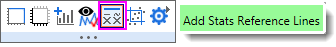
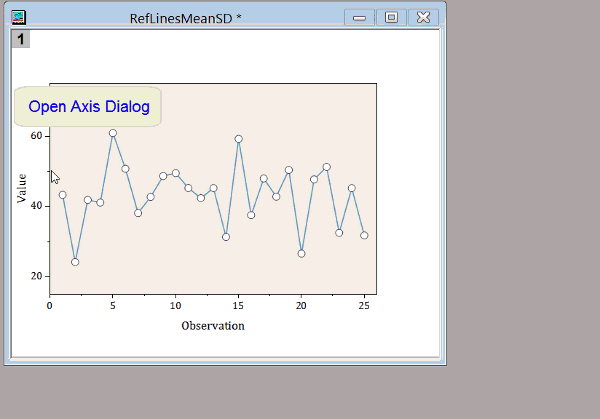

FAQ-621 Wie kann ich bei einem festgelegten X- oder Y-Wert eine Gerade in ein Diagramm einfügen?
add-straight-line
Letztes Update: 01.04.2020
Neben dem einfachen Zeichnen einer Linie mit dem Hilfsmittel Linie  gibt es mehrere Methoden zum Hinzufügen einer vertikalen oder horizontalen Linie zu Ihrer Grafik bei einem spezifischen Achsenwert:
gibt es mehrere Methoden zum Hinzufügen einer vertikalen oder horizontalen Linie zu Ihrer Grafik bei einem spezifischen Achsenwert:
- Stellen Sie sicher, dass das Diagrammfenster aktiv ist, und wählen Sie Einfügen: Gerade hinzufügen, um den Dialog addline zu öffnen. Legen Sie in diesem Dialog den Wert von X (Typ = Vertikal) oder Y (Typ = Horizontal) in dem Textfeld Bei Wert fest. Es gibt Optionen, um die Linie zu formatieren und sie zu beschriften.
- Klicken Sie doppelt auf die X- oder Y-Achse des Diagramms, um den Dialog Achsen zu öffnen. Gehen Sie zur Registerkarte Gitternetze und aktivieren Sie das Bearbeitungsfeld Y oder X im Zweig Zusätzliche Linien und geben Sie einen Wert ein.
- Klicken Sie in den Diagrammlayer, um den Layer auszuwählen und die Minisymbolleiste auf Layerebene anzuzeigen. Klicken Sie auf die Schaltfläche Statistische Referenzlinien hinzufügen, um eine oder mehr Linien hinzuzufügen, die statistische Kennwerte markieren; oder klicken Sie auf Mehr, um den Dialog Referenzlinien zu öffnen (siehe nächsten Abschnitt).
-
- 
- Klicken Sie doppelt auf die X- oder Y-Achse, um den Dialog Achsen zu öffnen. Klicken Sie auf die Registerkarte Referenzlinien und geben Sie einen Achsenwert oder eine Statistik (nur in Origin 2018 und höher) ein, um die Linie anzuzeigen (Bei Achsenwert). Zeigen Sie optional die Beschriftung und wählen Sie Ihren Beschriftungstext.
- 
Schlüsselwörter:Referenzlinien, vertikale Linie, horizontale Linie